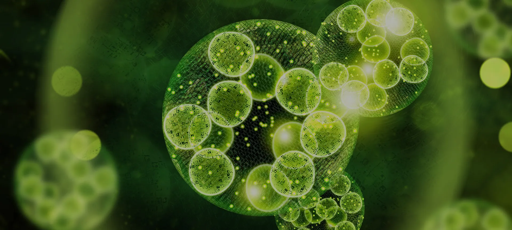
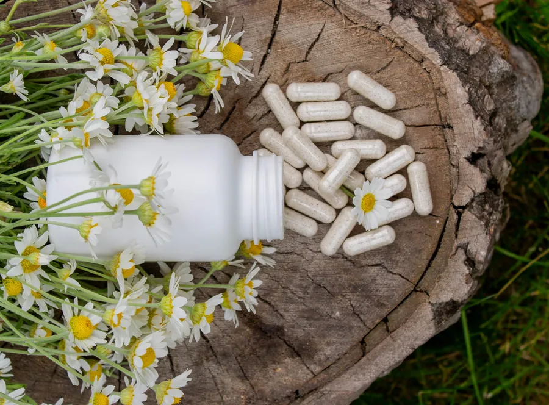
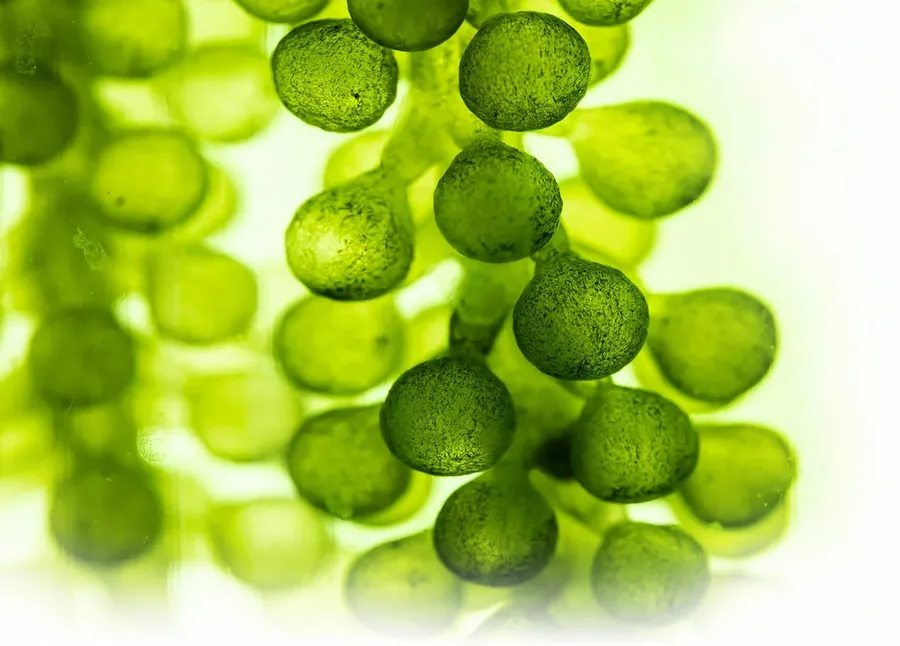

Shop by Category
Detoxification
Cellular nutrition that nourishes your cells and supports natural detoxification, powered by organic marine algae cell factors.

What Is Detoxification?
Helping your body cleanse itself, naturally
Detoxification is the body’s own process of neutralising and removing the substances it doesn’t need. Your liver and kidneys do this work every day, so your cells can function at their best.
Modern life adds to the load. Our bodies take in toxins daily from food, water, medication and environmental pollution, on top of preservatives, alcohol and stress. When they build up, you can feel sluggish, bloated, tired or simply not yourself.
Detox support is not an extreme cleanse, and it does not replace your liver or kidneys. It supports them, supplying the nutrients and plant compounds your cells need to do their job more efficiently, quietly in the background of your daily routine.
Why It Matters
What gentle detox support can help with
When your cells are cleansed and well nourished, you feel the difference in body and mind.
Feel lighter
Less of the heavy, bloated feeling that follows rich food, late nights and stress.
More energy
Steadier energy through the day and less everyday fatigue.
Clearer-looking skin
Helping the body clear what it doesn’t need shows on the surface too.
Mental well-being
Better focus and concentration, with relief from everyday stress.

The ZÉLL-V Approach
Cellular nutrition from organic marine algae
ZÉLL-V Phytogreen with Organic Marine Cell Factors was born after years of research by Swiss, German and New Zealand scientists. Organically cultivated in a pristine environment under the most stringent conditions, these marine algae cells supply the complete range of nutrients your cells need to stay healthy and resilient.
Microalgae are also naturally rich in chlorophyll, a natural cleanser that supports a healthier, more radiant complexion.
- Organic antioxidants
- Amino acids
- Fatty acids
- Minerals
- Vitamins
Shop Detoxification
Detoxification products
Good to Know
Detoxification: common questions
Is detoxification the same as a juice cleanse?
No. A real cleanse has nothing to do with starving the body or flushing it with harsh laxatives. Detox support nourishes your liver, kidneys and cells so they can do their natural job more efficiently, while you carry on with your normal routine.
Who can take ZÉLL-V Phytogreen?
Phytogreen is suitable for all ages, making it a complete nutritional supplement for the whole family, from children and students to busy professionals and seniors.
How else can I support my body’s natural detox?
Drink enough water, sleep well and choose whole foods over processed ones. For a deeper reset, our Wellness Retreat includes a Cellular Bathe Detox as part of a personalised programme.
- Swiss & GermanExclusive formulation by renowned scientists and clinicians
- New ZealandSheep reared using the stringent ‘close colony’ method
- GFSTT & IAOSSResearch and development led by international medical experts
- SecureCheckout with PayPal or card. Prices in USD.
Explore
Other categories
Category
Detoxification
Cellular nutrition that nourishes your cells and supports natural detoxification, powered by organic marine algae cell factors.
Shop DetoxificationCategory
Rejuvenation
Sheep placenta cellular therapy from New Zealand to renew, repair and revitalise your cells from within.
Shop RejuvenationCategory
Anti-Ageing
Advanced formulas and therapies that target ageing at its core, from DNA repair to total skin revitalisation.
Shop Anti-AgeingCategory
Beauty
Skincare powered by stem cell technology to refine wrinkles, restore skin layers and defend against environmental damage.
Shop Beauty